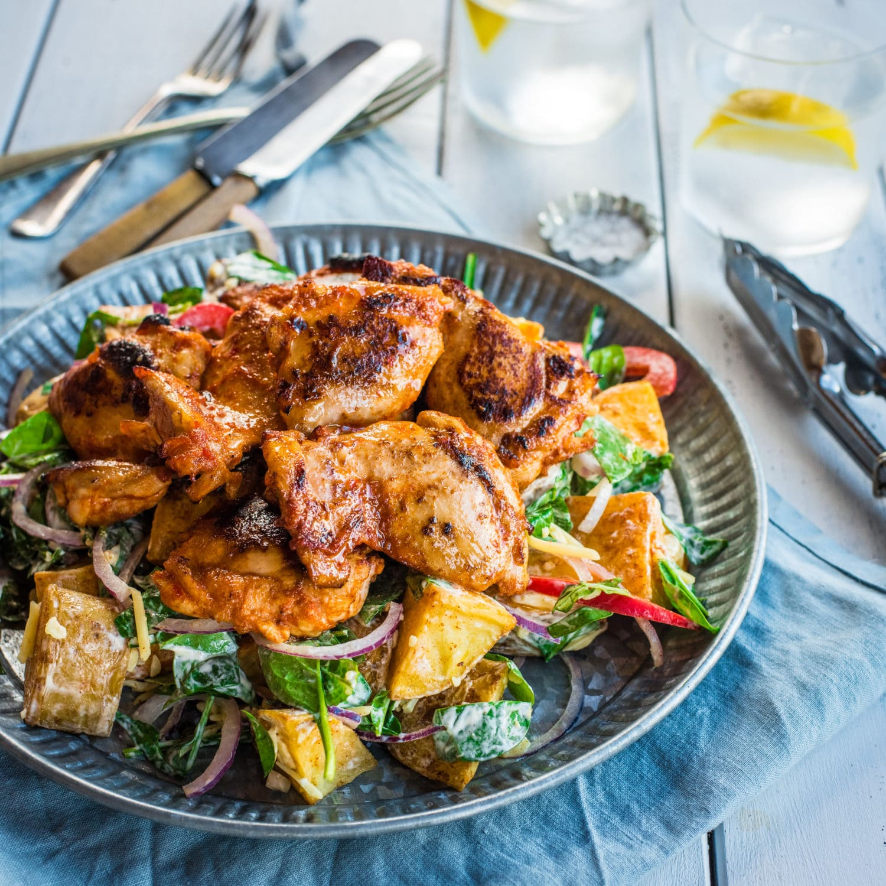

Smoked Paprika Chicken with Spinach Salad

This ultra-tasty smoked paprika chicken is one of the most popular recipes ever from Bargain Box! It's quick, easy and healthy - making it the perfect weeknight meal I reckon.
INGREDIENTS
Salad
- 800 g potatoes scrubbed and diced 2-3cm
- 1 teaspoon smoked paprika
- 1 capsicum thinly sliced
- ½ red onion thinly sliced
- 100 g baby spinach
- 1 cup cheese
- ½ cup sour cream
- 2 tablespoons mayo
- 1 teaspoon mustard
Smoked Paprika Chicken
- 600 g boneless free-range chicken thighs
- 1 orange zest
- ¾ teaspoon smoked paprika
- 1 teaspoon mustard
- 2 tablespoons tomato sauce
- 1 tablespoon sweet chilli sauce
INSTRUCTIONS
- PREHEAT oven to 220°C. Line an oven tray with baking paper. Preheat BBQ grill or hot plate to medium-high (if using).
- Toss potatoes on prepared tray with first measure of smoked paprika and a little oil. Season with salt and pepper and bake for 25-30 minutes, until golden and cooked through. Turn once during cooking. Set aside to cool slightly.
- Pat chicken dry with paper towels and place in a large bowl with orange zest, second measure of paprika, mustard, tomato sauce and sweet chilli sauce. Season with salt and pepper and mix to combine. Set aside to marinate for 10-15 minutes.
- Place all salad ingredients in a large bowl with cheese. Mix sour cream, mayo and mustard together in a small bowl and set aside.
- Heat a little oil in a large fry-pan on medium heat. Cook chicken for 4-5 minutes each side, until cooked through. Alternatively, cook on BBQ grill or hot plate as per instructions above. Set aside on a plate, covered in foil, to rest for 2-3 minutes.
- Place slightly cooled potatoes into bowl with all other salad ingredients and mix gently to combine. Add sour cream and mayo mix and stir to coat salad. Season to taste with salt and pepper.
- TO SERVE place a large spoonful of salad onto each place and serve smoked paprika chicken on the side.
Return to main page